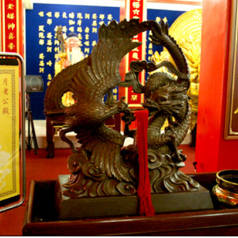
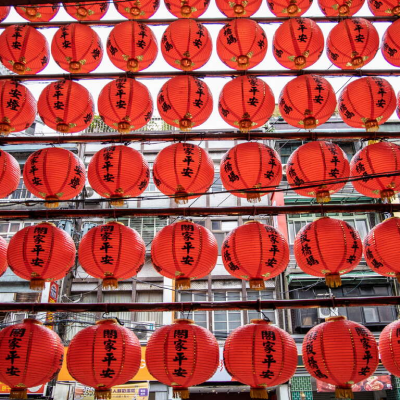
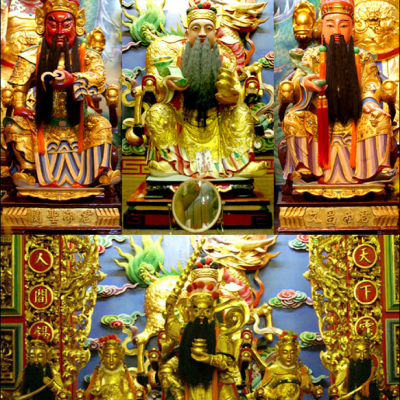
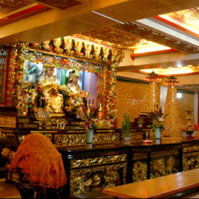

求姻緣 · 林忠毅 求光明 · 林忠二 消災祭解補運 · 林忠三 安太歲 · 林忠四 光明燈 · 林忠五
神 明 每 日 一 語

然後按下
筊 杯
|  |
求 姻 緣月下老人，俗稱為月老公或媒妁（人），掌理男女結緣之神。祈求月下老人【牽姻緣】時： |
|  |
消災祭解補運平時每月初一、十五日下午二時祭解補運外，新春期間謹訂於農曆正月九、十、十一、十二、十三、十四、十 五、十六、十七、十八日十天每日下午禮聘出家大法師主持祭星解厄。 |
|  |
求 功 名文昌功名燈祈求：學業進步(【全年】每口 1000 元)。 |

|
安 太 歲太歲即是歲神又稱太歲君，主掌人間的禍福吉凶，依六十甲子輪流值歲，總稱為六十甲子太歲，當值者謂值者謂值年太歲每名值年太歲皆有姓氏名諱，其犯沖的對象亦有所不同。 |
|  |
光 明 燈點光明燈即是點亮心燈。使心境光明廣大，意識胸襟曠放，精神愉快。棄邪道、除心魔，引導在黑暗心煩意亂摸索的人，走向光明的康莊大道。使人形光昌、精神煥發、文路流暢、學業猛進、事業丕興、營謀順利、大吉大發、萬事如意。 |